ספר בראשית
12 ספרים · 12 זמינים לעיון באתר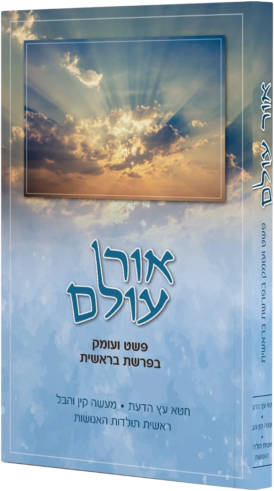
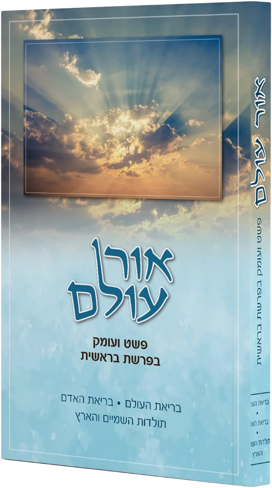
אור עולםלעיון בספר ←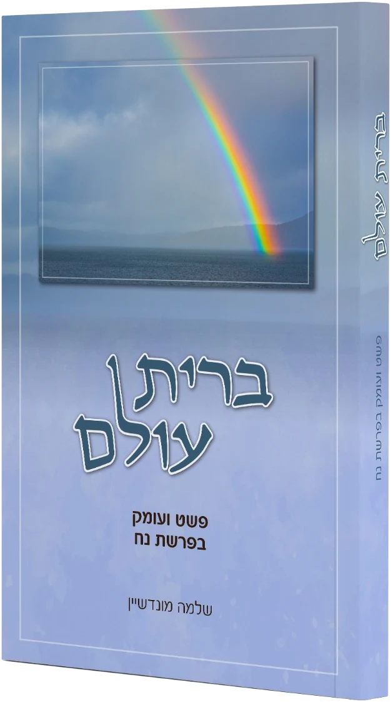
ברית עולםלעיון בספר ←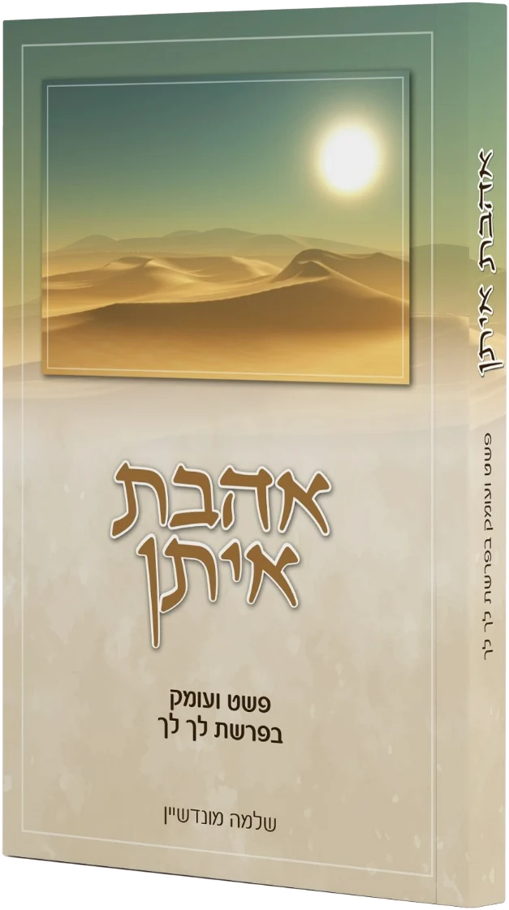
אהבת איתןלעיון בספר ←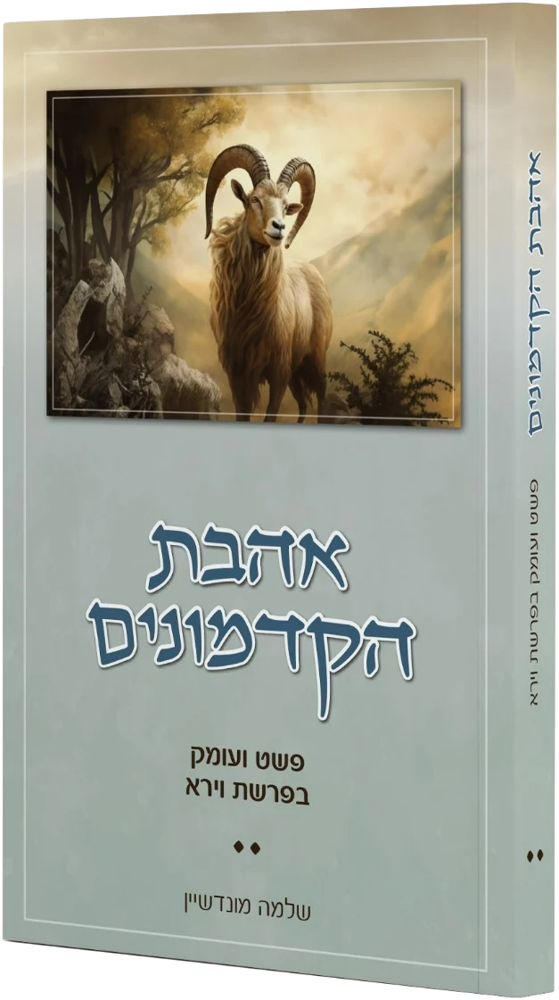
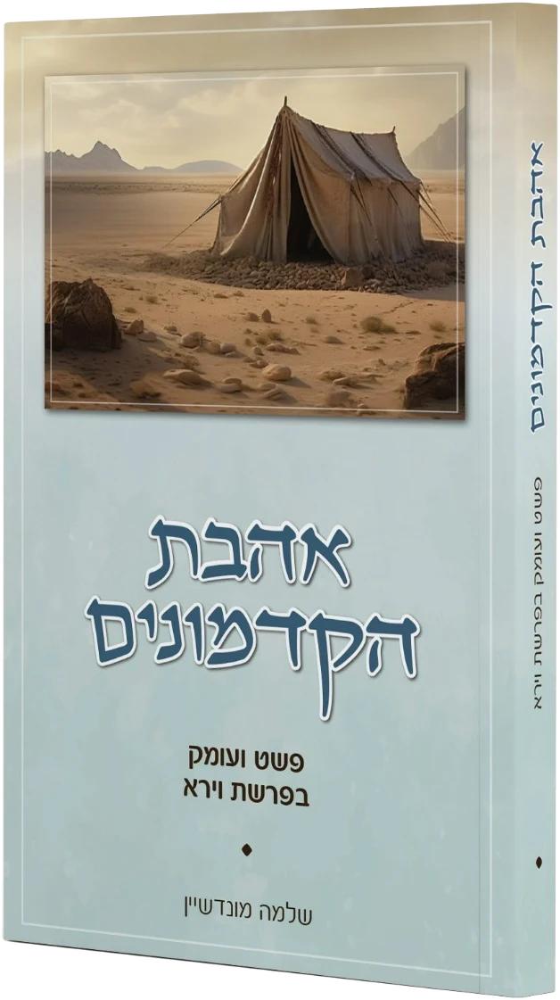
אהבת הקדמוניםלעיון בספר ←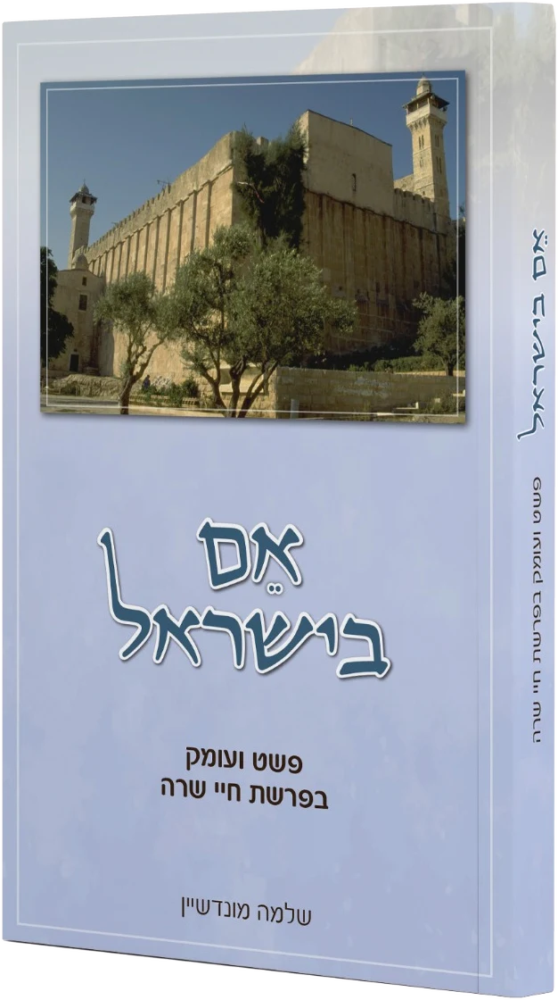
אם בישראללעיון בספר ←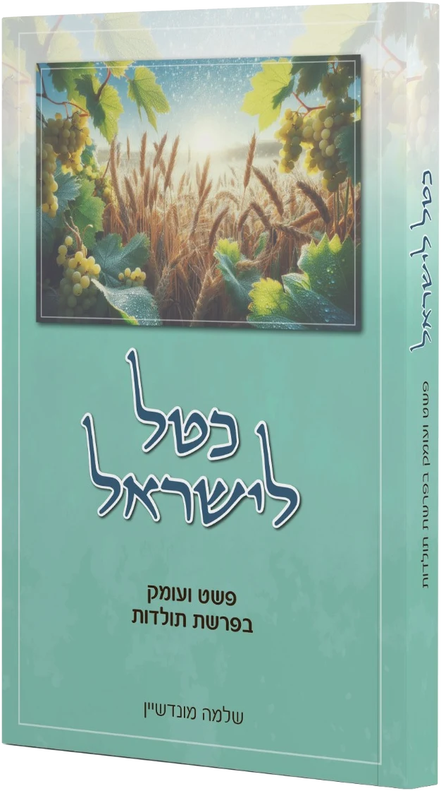
כטל לישראללעיון בספר ←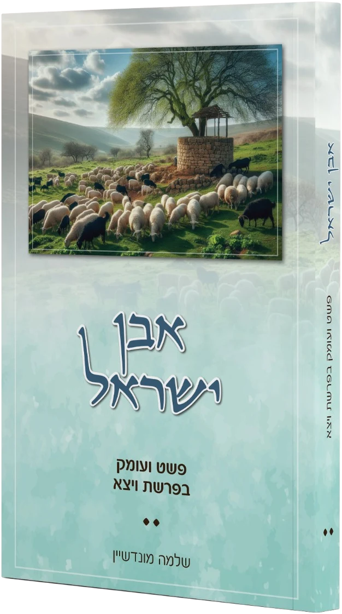
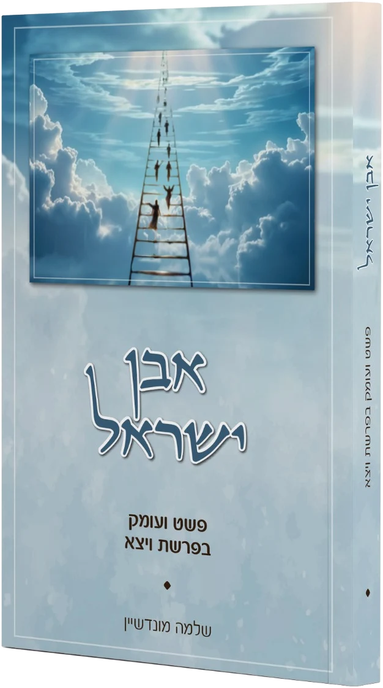
אבן ישראללעיון בספר ←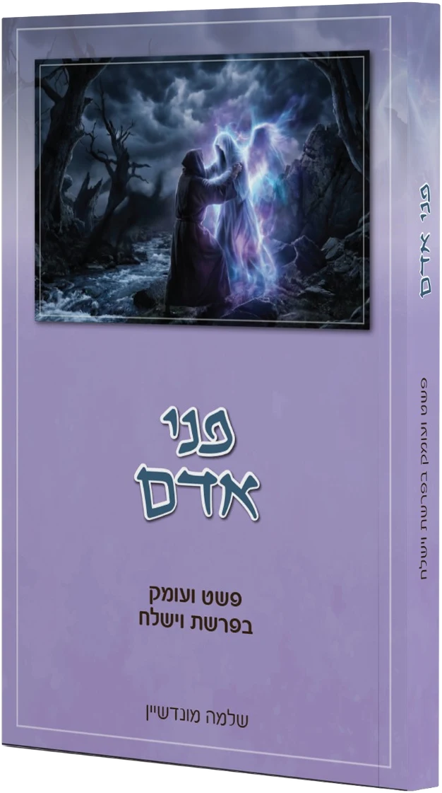
פני אדםלעיון בספר ←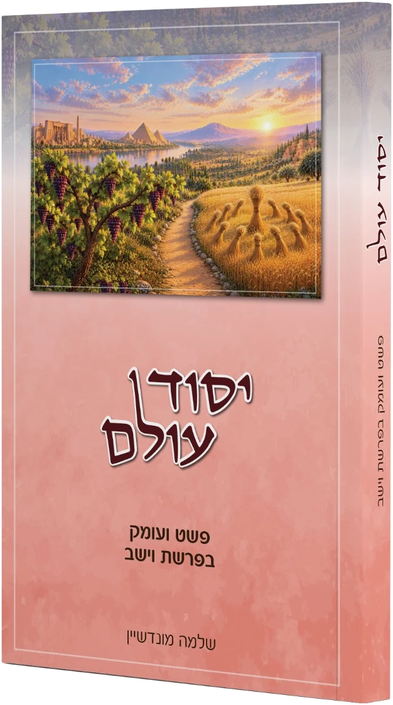
יסוד עולםלעיון בספר ←